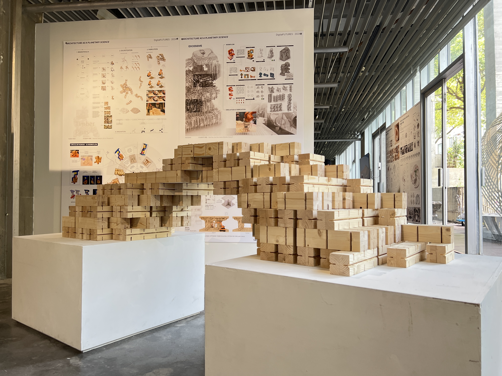
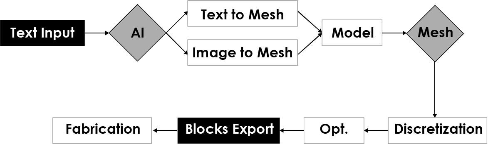
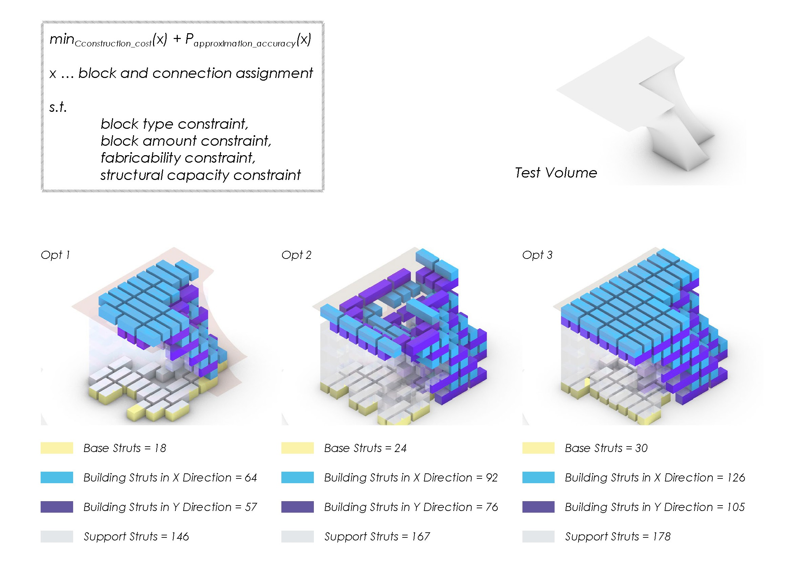
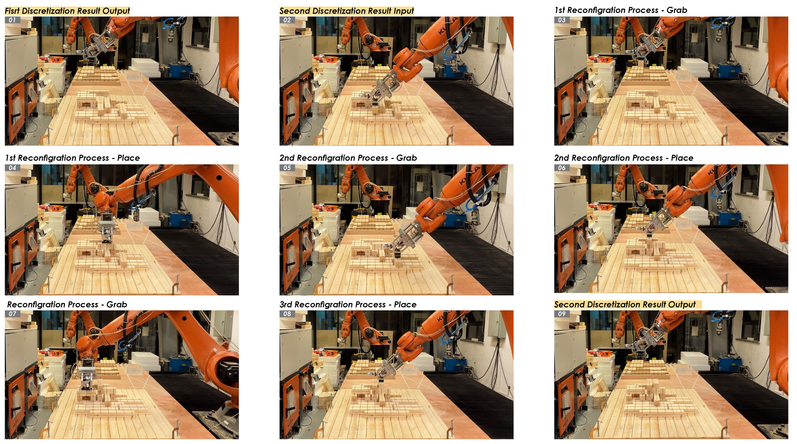

01
Demand Translation
自然语言需求转化
将用户输入的文本需求转译为可被 AI 生成、编辑和后续处理的空间几何。

参与基于 LLM 的 Text-to-3D 工作流研究，探索将自然语言需求转化为可编辑 3D 几何、模块化构件系统与机械臂自主搭建流程的完整链路。 项目聚焦于“需求理解 → 方案生成 → 结构离散化 → 模块优化 → 实体搭建”的产品化转译过程。
本项目来自同济大学建筑与城市规划学院的研究助理工作，研究目标是将生成式 AI、Text-to-3D、模块化木构系统与机械臂制造流程整合为一套 Prompt-to-Production 工作流。 相比传统设计流程中从概念、建模到施工图的线性推进，项目尝试让自然语言需求直接参与早期空间生成，并进一步转化为可优化、可离散、可制造的实体建造序列。
我参与了从工作流梳理、算法逻辑表达、模块选型与排列优化，到研究图像整理和实体模型展示的过程。 项目核心并不只是生成一个 3D 形体，而是将复杂的空间需求拆解为标准化模块、结构约束和机械臂可执行动作。
将用户输入的文本需求转译为可被 AI 生成、编辑和后续处理的空间几何。
通过 Text-to-Mesh 与 Image-to-Mesh 方法，将概念输入转化为模型与 Mesh 结构。
将连续几何转化为标准木构模块组合，并满足数量、连接、制造和结构约束。
生成构件抓取、移动、放置和重构序列，验证模块系统的循环使用潜力。
工作流从文本输入开始，通过 AI 将自然语言需求转化为几何模型。模型经过 Mesh 处理后进入结构离散化阶段，再通过优化算法选择合适的模块类型、数量与排列方式。 最终，系统导出可用于机械臂搭建的模块信息和制造序列，实现从数字方案到物理构件的连续转译。

通过自然语言描述空间需求，形成生成式设计的初始约束。
将生成结果转化为可分析、可重构的 Mesh 几何结构。
将几何结构离散为可制造、可重复使用的标准化木构模块。
模块化建造的关键问题在于：如何把复杂连续形体转化为有限种类、有限数量的标准构件，同时保持结构表达、制造可行性和几何近似精度。 项目中的离散化算法将构件类型、构件数量、连接关系、机械臂可达性和结构承载能力共同纳入约束条件。
我参与使用 OR-Tools 进行模块选型与排列优化，在建造约束下提升几何填充效率。 这个过程本质上是一种将复杂需求拆解为标准化模块的设计方法：既要满足空间形态，也要让每个构件可以被编号、抓取、放置和复用。
在构件数量、建造成本和几何近似精度之间寻找平衡，避免过度复杂或失真。
使用有限类型的木构模块进行组合，保证系统具有标准化和可重复生产能力。
离散结果需要满足机械臂抓取、放置、连接和重构的物理操作条件。
在模块组合过程中考虑支撑关系、承载能力和结构稳定性。

Assembly-Oriented Discretization Algorithm：在 block type、block amount、fabricability 与 structural capacity 等约束下进行构件分配与排列优化。
项目进一步研究了模块系统的循环使用能力。不同结构形态可以共享相同数量和类型的木构模块，通过重新排列和重组形成新的空间构型。 这意味着建筑构件不再是一次性消耗品，而可以成为可回收、可重组、可持续使用的结构资源。
在结构重构流程中，第一轮离散化结果会被读取为构件类型和数量信息。随后系统在“相同构件数量”的约束下生成第二轮离散化方案，并根据设计是否满足要求进行批准或重新生成。 这个流程为后续机械臂的自动拆装和重组提供了清晰的数据基础。

Structural Configuration / Reconfiguration：通过相同类型与数量的构件集合，实现不同结构形态之间的重组。
实体制造测试验证了从离散化结果到机械臂动作序列的可执行性。 机械臂根据构件信息进行抓取、移动和放置，并按照重构流程将第一轮结构转换为第二轮结构。 测试过程包括读取模块类型、约束模块数量、生成下一轮离散化方案，以及对设计结果进行批准或重新生成。

Autonomous Manufacturing：机械臂根据离散化结果进行 grab、place 与 reconfiguration 操作，验证模块化结构在物理环境中的可重构性。
项目过程中，我与斯图加特大学研究团队及建筑设计团队协作，参与完成 1:50 实体模型搭建，并将算法流程、空间逻辑与建造约束整理为可展示、可讨论的研究成果。 这个过程要求在研究语言、建筑表达和制造逻辑之间建立清晰的沟通方式。
对我而言，这个项目的价值在于它把 AI 生成从“图像或模型输出”推进到“可建造系统”的层面。 自然语言需求、三维几何、模块化构件、优化算法和机械臂动作被整合为一条连续链路，形成了面向实际制造的生成式设计方法。
Fabrication Outcome：研究成果展示、实体模型与机器人建造验证过程。
这个项目训练的是一种跨尺度转译能力：从用户需求到空间方案，从连续几何到离散模块，从算法约束到机械臂动作。 在设计层面，它要求理解空间形态如何被拆解为标准构件；在计算层面，它要求将构件数量、连接关系和建造约束转化为优化问题；在制造层面，它要求确保结果可以被机器人抓取、放置和重组。
因此，它不仅是一个建筑机器人研究项目，也是一套面向未来智能建造的产品化流程原型： 将模糊的自然语言需求，逐步转化为可编辑、可优化、可交付、可物理执行的建造系统。
将自然语言中的空间意图拆解为几何、结构、模块和制造约束。
将设计问题整理为可计算、可优化和可重复执行的模块化系统。
使用 OR-Tools 等工具参与构件选择、数量控制和排列优化。
将算法流程、结构逻辑和机器人制造过程整理为清晰的研究展示成果。